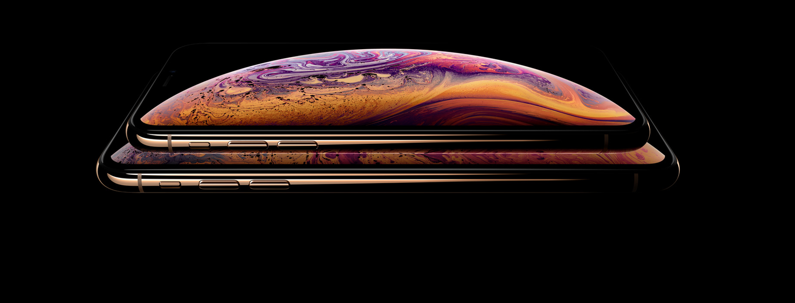

iPhone XS and iPhone XS Max:
Everything you need to know!
Looking to learn a little bit more about what's happening with the new iPhone XS and iPhone XS Max? We've got you covered!

Advanced face ID
Security is simple when your face is your passwoord.
You can unlock your phone, log in to apps, and pay for things with a glance. It's the most secure facial authentication ever in a smartphone. And now it's even faster.
No other phone is like iPhone
Every decision that goes into iPhone makes it stand apart
From the way it's made, to the way we build privacy and security from the start, to the innovative ways we recycle the components